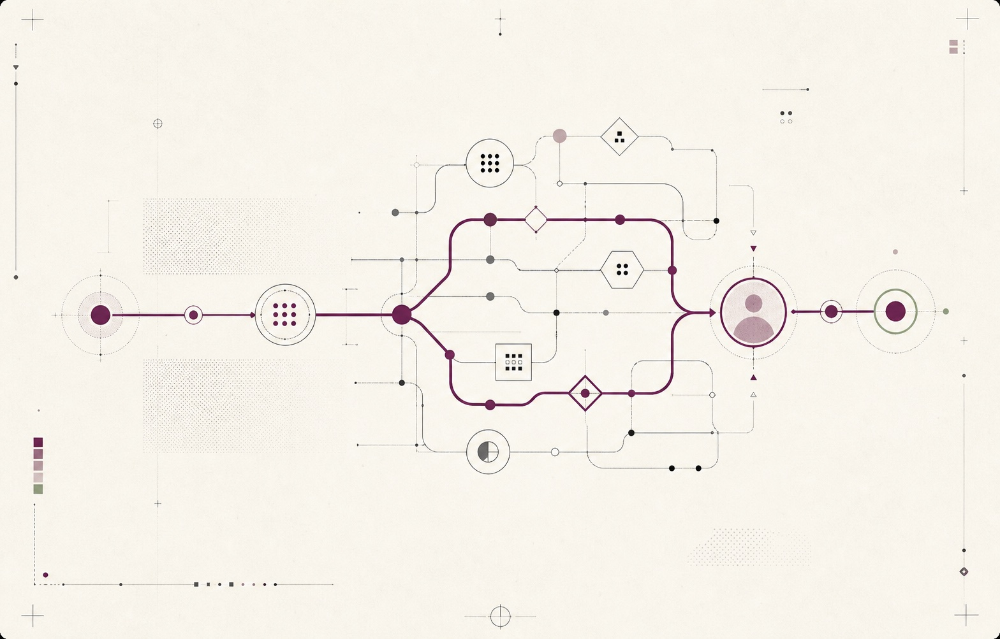
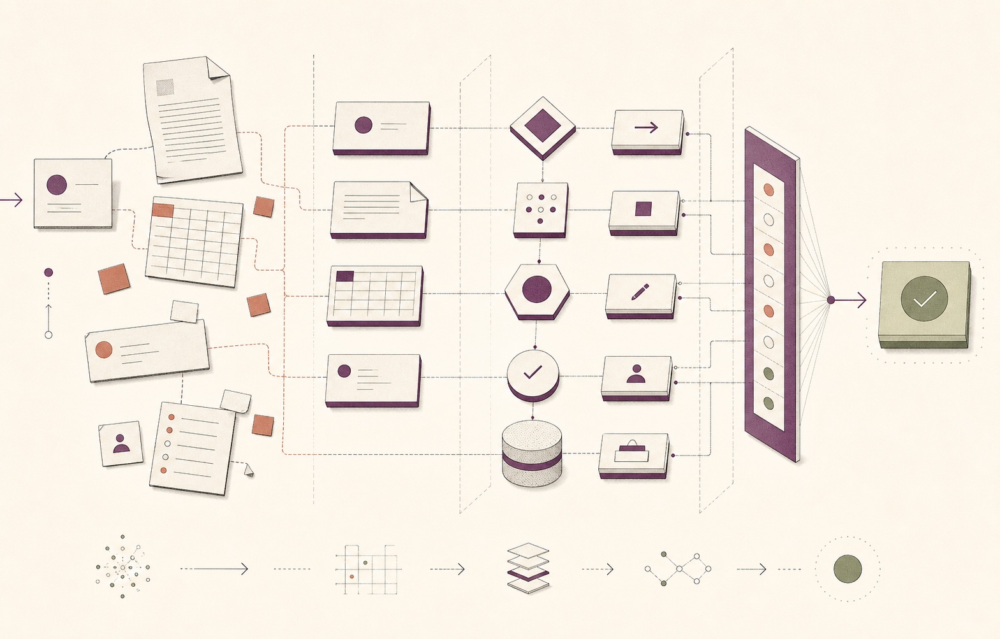
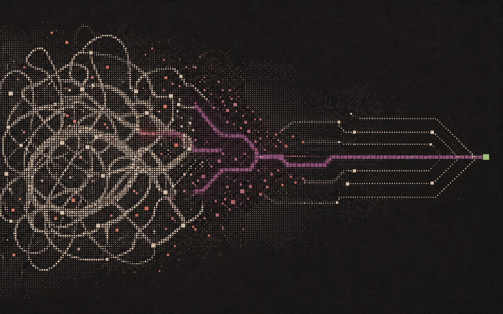

Before
Prompt Answer A clever response.The human still carries the work.
Brand exploration · 27 July 2026
Insurwreck is where people stop prompting for answers and start redesigning how work gets done—with agents, workflows, tools, automation, and human judgment.

01 · The shift
Prompting still matters. It is simply no longer the idea. The idea is reliable work moving from intent to outcome.
Before
Prompt Answer A clever response.Now
“The people closest to the work understand where it slows down, where it breaks, and where judgment really matters.”
02 · The visual grammar
Give every visual element a job. A trigger enters. Context assembles. Tools act. A person decides. The system checks its result.
03 · Visual territories
One lead identity system, supported by two material languages. Together they can scale from posters to stage motion to the web.
Identity system
A living network of goals, context, tools, decisions, handoffs, and outcomes. One Plum route moves through the system; human judgment is visible, never hidden.

Component language
Ordinary work is pulled apart into requests, documents, data, decisions, tools, approvals, and outcomes—then rebuilt as a coherent agentic system.

Material + motion
Repeated manual effort becomes a controlled field. A signal breaks the loop, reorganises the system, and resolves into a clear outcome.
04 · Evolve, don’t discard
The hierarchy-flattening instinct is right. Domain knowledge is the most valuable building material.
Exploded objects, pixels, and modules now reveal the anatomy of work—not the anatomy of old hardware.
Terminals and glitch can remain as texture. They should not define an event about action, automation, and outcomes.
05 · From Saurabh’s X bookmarks
These are references, not templates: each contributes one useful behaviour to the system. Open any card to see the original post.

Networks as identity: systems that spread, adapt, and remain editorial.

Calm state changes make agent behaviour legible.

A field becomes motion through one simple rule.

Technical texture can stay light, precise, and human.

Quiet hierarchy leaves room for the work itself.

Dither works best as material, not as the whole story.

Graphs become useful when entities and relationships are teachable.

Intent, goals, guardrails, action, and feedback form one operating loop.
06 · Application studies
Quiet for long-form communication. Bold for the room. Alive in motion. Always tied to work moving from friction to outcome.
Core palette
Type behaviour
Build the work
that does the work.
Recommendation
This gives the brand team one coherent system rather than three competing styles: a clear identity, a tactile component language, and a distinctive motion material.